Final Art 025 · 静态材质测试
这一轮先固定材质身份：透明外膜、银白主导的浅青内部体积、柔和连续层次和简单边缘。最新候选按参考图的浅色内部关系重新校准字段；没有运动、实时物理或生产迁移。
主候选与参考
锁定文件：static-material-lock.json。旧候选保留作历史对照，不再作为下一步入口；本页仍不代表 production、GPU runtime 或 M3 已完成。
最新审查预览 · 中性灰 / 高光软化
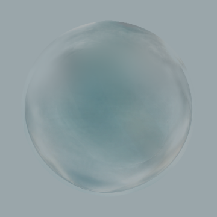
判断新候选是否已经进入 Final Art 025 的视觉邻域，然后再决定是否值得继续拆分成可运行的 GPU 材质。主结构不依赖双核；点光只作为参考中很小的细节。
- 025：主要材质目标。
- 050：只看厚度、深度和内部云层。
- K2：只看冻结端点，不用来定义本轮材质。
- M1 neutral：输入证据，不是成品。
同尺度对比
Final Art 025
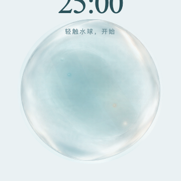
025 highlight-soft · 浅色底
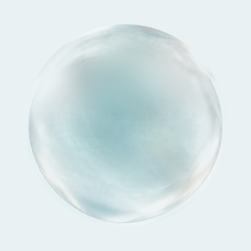
上一版 left-shadow-clean
025 side clean
025 reference soft
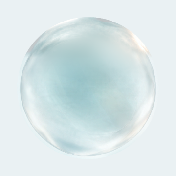
025 simple shell
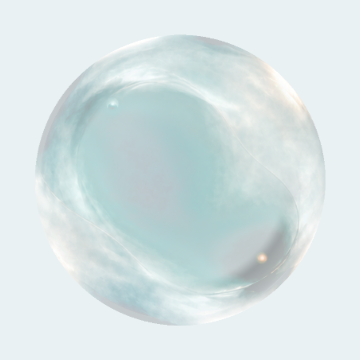
025 sphere relief
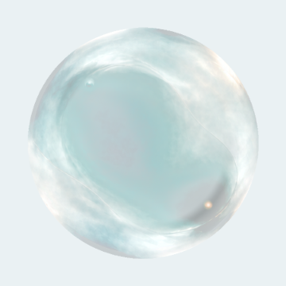
025 calibrated · Cycle 2
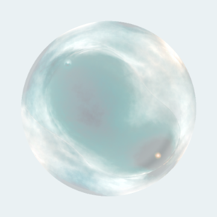
Current cooler
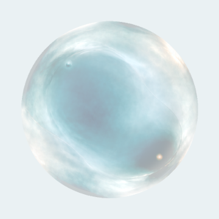
Previous original
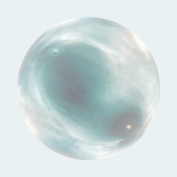
旧正式基线（已对齐）
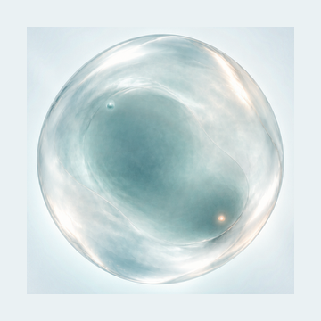
Final Art 050
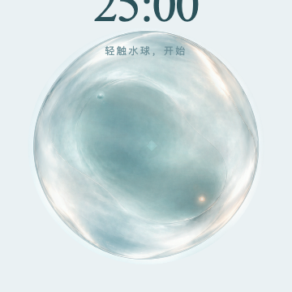
这次只改了一件事
最新跟进沿用 corner clean 的浅色内部和左上角修正，在左右上弧同步收敛 optical depth、scatter、formal film 和 shell reflection。顶部中央、silhouette、主体中心和其余轮廓不动。
新候选的背景与字段检查
中性灰 · 高光软化
浅色主观看域
深色背景
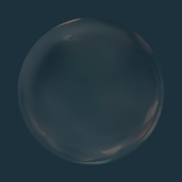
冷暖分屏
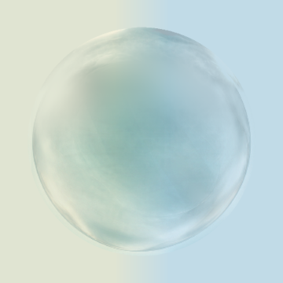
棋盘背景
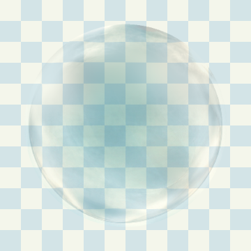
吸收 / 光学深度
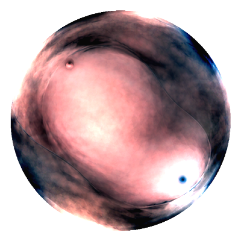
反射光
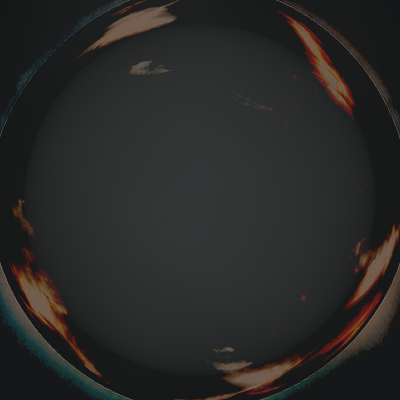
厚度
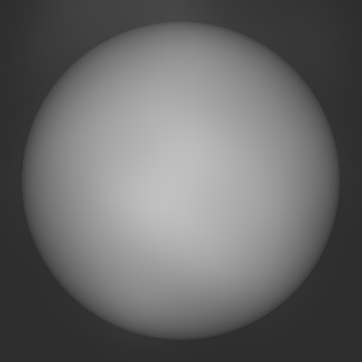
局部折射
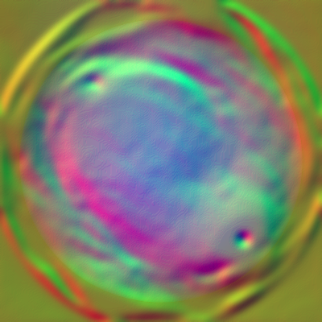
Simple shell film
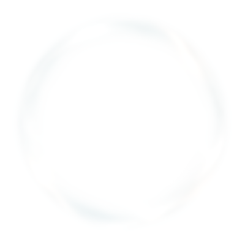
Reference soft film
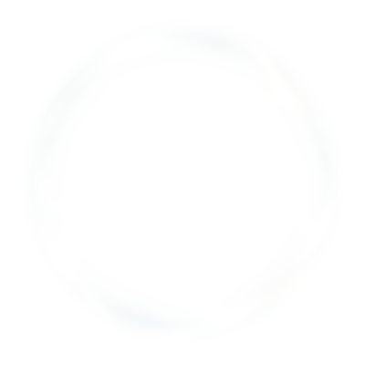
Reference top repair
Reference side clean
Reference corner clean
Reference upper clean
Left shadow clean
Upper clean film
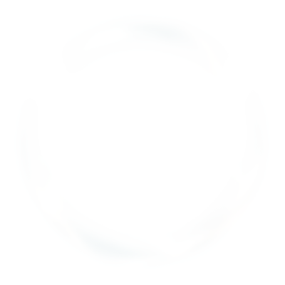
Reflection authority split
Internal reflection
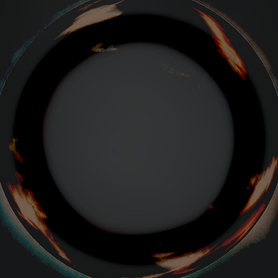
Shell reflection
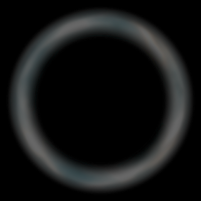
Internal scatter
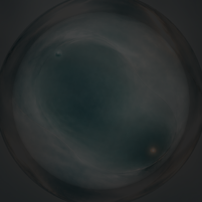
025 depth mask
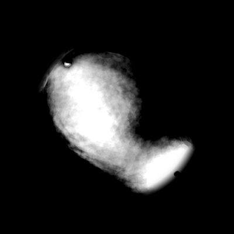
Shadow relief mask
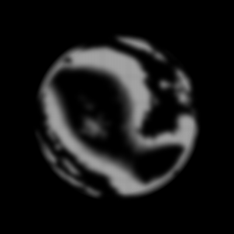
四背景厚度均值匹配对照
浅色 · 均值厚度
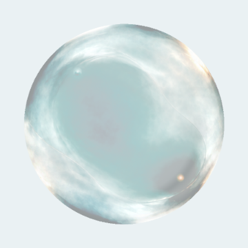
深色 · 均值厚度
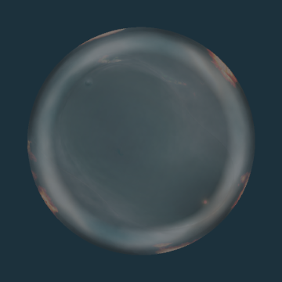
冷暖分屏 · 均值厚度
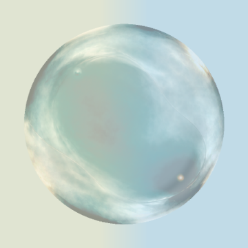
棋盘 · 均值厚度
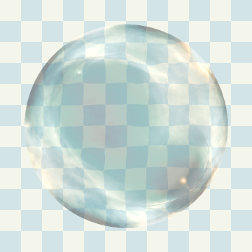
四背景局部近景 + 中性审查
中性灰 · 高光软化近景
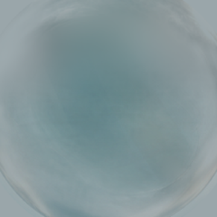
浅色近景
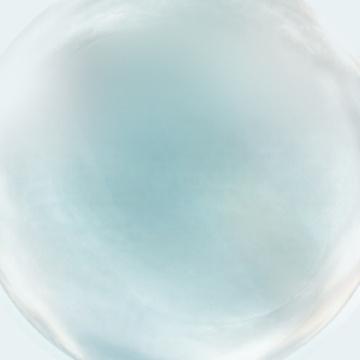
深色近景
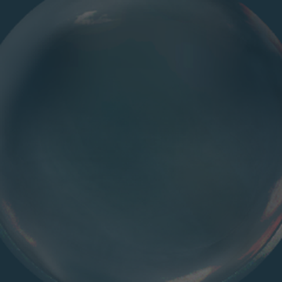
冷暖分屏近景
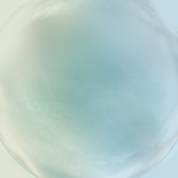
棋盘近景
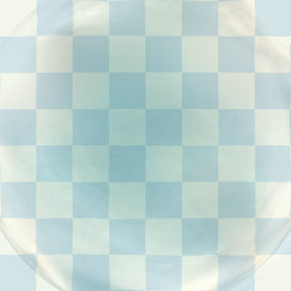
M2 静态 GPU 材质验证
打开静态 GPU pass。它只读取锁定字段复现 025，不进入 production、动态或 M3。查看本轮证据。
Future transition reference
Current cooler · preserved
future-transition-envelope.json 只记录 optical depth、density、refraction、detail visibility 的视觉范围。没有 interpolation、formation、runtime state 或 moving。
层诊断：为什么不能直接全层相加
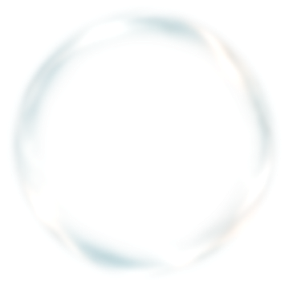
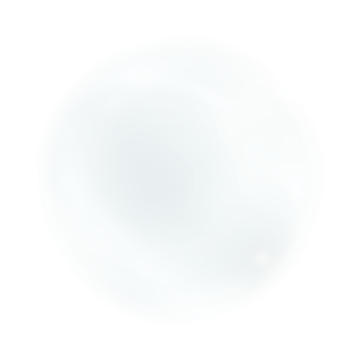
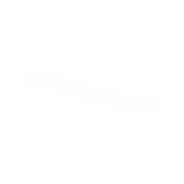
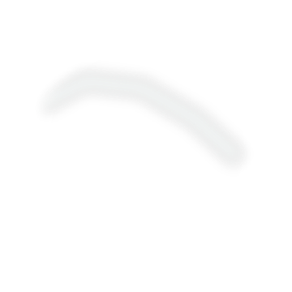
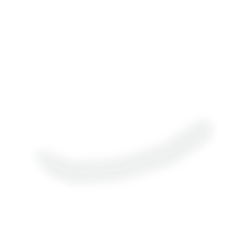
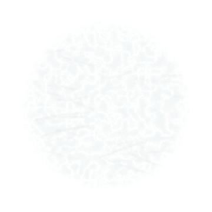
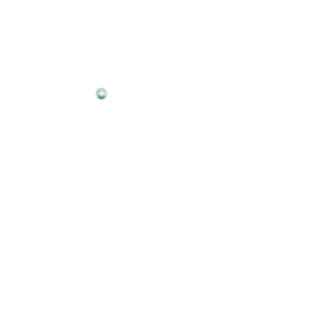
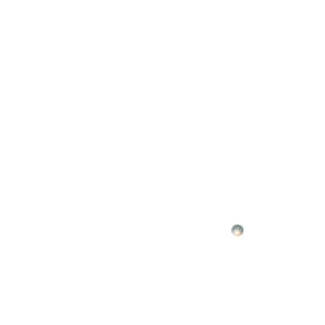
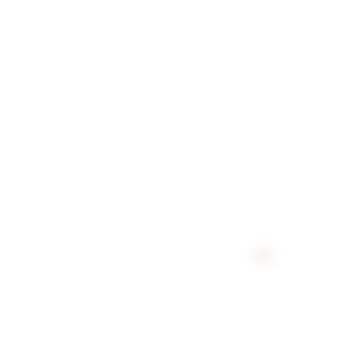
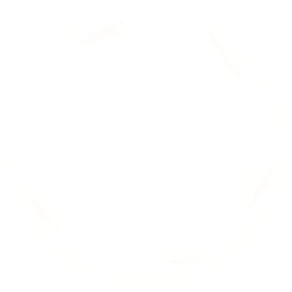
下面是素材层的贡献查看器。它不是主候选，也不宣称是正确的生产合成。默认只显示背景板，因为背景板已经包含了正式静态材质。
自查结论：把 00 与 01–11 直接叠加会重复计算已烘焙材质，出现过亮噪纹和黑色带状结构。当前主候选已经从导出的 optical / reflected / thickness / refraction / silhouette / film / detail PNG 回读重建；层叠图仍只用于解释错误路线。
人工裁决点
如果新候选已经接近 025，下一步再接入真实 GPU 静态 pass；如果仍然不接近，继续改参数没有意义，应重新制作材质字段，而不是继续堆噪声、弧线或体积步进。